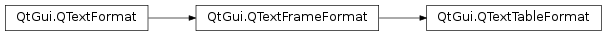

QTextTableFormat¶
Synopsis¶
Functions¶
- def
alignment() - def
cellPadding() - def
cellSpacing() - def
clearColumnWidthConstraints() - def
columnWidthConstraints() - def
columns() - def
headerRowCount() - def
setAlignment(alignment) - def
setCellPadding(padding) - def
setCellSpacing(spacing) - def
setColumnWidthConstraints(constraints) - def
setColumns(columns) - def
setHeaderRowCount(count)
Detailed Description¶
The
PySide2.QtGui.QTextTableFormatclass provides formatting information for tables in aPySide2.QtGui.QTextDocument.A table is a group of cells ordered into rows and columns. Each table contains at least one row and one column. Each cell contains a block. Tables in rich text documents are formatted using the properties defined in this class.
Tables are horizontally justified within their parent frame according to the table’s alignment. This can be read with the
PySide2.QtGui.QTextTableFormat.alignment()function and set withPySide2.QtGui.QTextTableFormat.setAlignment().Cells within the table are separated by cell spacing. The number of pixels between cells is set with
PySide2.QtGui.QTextTableFormat.setCellSpacing()and read withPySide2.QtGui.QTextTableFormat.cellSpacing(). The contents of each cell is surrounded by cell padding. The number of pixels between each cell edge and its contents is set withPySide2.QtGui.QTextTableFormat.setCellPadding()and read withPySide2.QtGui.QTextTableFormat.cellPadding().
The table’s background color can be read with the
PySide2.QtGui.QTextFormat.background()function, and can be specified withPySide2.QtGui.QTextFormat.setBackground(). The background color of each cell can be set independently, and will control the color of the cell within the padded area.The table format also provides a way to constrain the widths of the columns in the table. Columns can be assigned a fixed width, a variable width, or a percentage of the available width (see
PySide2.QtGui.QTextLength). ThePySide2.QtGui.QTextTableFormat.columns()function returns the number of columns with constraints, and thePySide2.QtGui.QTextTableFormat.columnWidthConstraints()function returns the constraints defined for the table. These quantities can also be set by callingPySide2.QtGui.QTextTableFormat.setColumnWidthConstraints()with a vector containing new constraints. If no constraints are required,PySide2.QtGui.QTextTableFormat.clearColumnWidthConstraints()can be used to remove them.
-
class
PySide2.QtGui.QTextTableFormat¶ -
class
PySide2.QtGui.QTextTableFormat(fmt) -
class
PySide2.QtGui.QTextTableFormat(QTextTableFormat) Parameters: - fmt –
PySide2.QtGui.QTextFormat - QTextTableFormat –
PySide2.QtGui.QTextTableFormat
Constructs a new table format object.
Creates a new table format with the same attributes as the
giventext format.- fmt –
-
PySide2.QtGui.QTextTableFormat.alignment()¶ Return type: PySide2.QtCore.Qt.AlignmentReturns the table’s alignment.
-
PySide2.QtGui.QTextTableFormat.cellPadding()¶ Return type: PySide2.QtCore.qrealReturns the table’s cell padding. This describes the distance between the border of a cell and its contents.
-
PySide2.QtGui.QTextTableFormat.cellSpacing()¶ Return type: PySide2.QtCore.qrealReturns the table’s cell spacing. This describes the distance between adjacent cells.
-
PySide2.QtGui.QTextTableFormat.clearColumnWidthConstraints()¶ Clears the column width constraints for the table.
-
PySide2.QtGui.QTextTableFormat.columnWidthConstraints()¶ Return type: Returns a list of constraints used by this table format to control the appearance of columns in a table.
-
PySide2.QtGui.QTextTableFormat.columns()¶ Return type: PySide2.QtCore.intReturns the number of columns specified by the table format.
-
PySide2.QtGui.QTextTableFormat.headerRowCount()¶ Return type: PySide2.QtCore.intReturns the number of rows in the table that define the header.
-
PySide2.QtGui.QTextTableFormat.setAlignment(alignment)¶ Parameters: alignment – PySide2.QtCore.Qt.AlignmentSets the table’s
alignment.
-
PySide2.QtGui.QTextTableFormat.setCellPadding(padding)¶ Parameters: padding – PySide2.QtCore.qrealSets the cell
paddingfor the table. This determines the distance between the border of a cell and its contents.
-
PySide2.QtGui.QTextTableFormat.setCellSpacing(spacing)¶ Parameters: spacing – PySide2.QtCore.qrealSets the cell
spacingfor the table. This determines the distance between adjacent cells.
-
PySide2.QtGui.QTextTableFormat.setColumnWidthConstraints(constraints)¶ Parameters: constraints – Sets the column width
constraintsfor the table.
-
PySide2.QtGui.QTextTableFormat.setColumns(columns)¶ Parameters: columns – PySide2.QtCore.intSets the number of
columnsrequired by the table format.
-
PySide2.QtGui.QTextTableFormat.setHeaderRowCount(count)¶ Parameters: count – PySide2.QtCore.intDeclares the first
countrows of the table as table header. The table header rows get repeated when a table is broken across a page boundary.
© 2018 The Qt Company Ltd. Documentation contributions included herein are the copyrights of their respective owners. The documentation provided herein is licensed under the terms of the GNU Free Documentation License version 1.3 as published by the Free Software Foundation. Qt and respective logos are trademarks of The Qt Company Ltd. in Finland and/or other countries worldwide. All other trademarks are property of their respective owners.